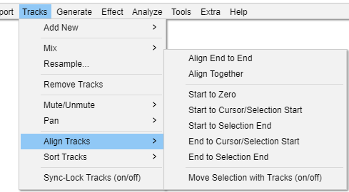

Tracks Menu: Align Tracks
- Click, or hover, on any menu item in the image to read about that command. Skip the image
- 
These commands provide an automatic way of aligning selected tracks with the cursor, the selection, or with the start of the project.
With the exception of the first two commands ("Align End to End" and "Align Together"), each selected track is moved along equally so they remain synchronized with each other. If a label track is included in the selection, its labels will also move equally so they remain synchronized.
When aligning end to end or aligning together, the tracks are always moved individually to enforce the requested alignment (as described below). Label tracks are not affected by these two commands.
When there is a selection, the commands that align tracks with the cursor/selection will align with the start of the selection, and when there is a cursor, the commands that align tracks with the cursor/selection will align with the cursor.
| If Sync-Lock Tracks is enabled, unselected tracks in a Sync-Locked Track Group will also move so that all the tracks in that group remain synchronized, except for the Align "End to End" and "Together" commands where only the selected tracks will move. Aligning end to end or together overrides Sync-Lock Tracks if necessary, so the selected tracks in that group may become desynchronized. |
Align End to End
Aligns the selected tracks one after the other, based on their top-to-bottom order in the project window. The first selected track remains where it is, the start of the second selected track aligns with the end of the first selected track and so on. If you name a group of imported files from an album so that their alphabetical order is the same as the order you want to align them in, Align End to End will make the imported files play in their album order.
After the align, all tracks in the project (not just the selected tracks) will be fitted to the window so that the end of the last track will be visible in the project window.
- Before doing
- After doing
- Note that zoom level has changed to display the entire project, and that the original selection has been retained.
Align Together
If you select multiple tracks, this command moves the tracks so that they all start at the same time, so audio within them changes its synchronization. The resultant start time is an average of all of the tracks' original starting times. To adjust the starting times of tracks with complete flexibility, use Time Shift Tool.
- Before doing
- After doing
- Note that the three tracks now start at the same time, and the start time is the average of the original start times of the three tracks.
Start to Zero
Aligns the start of selected tracks with the start of the project.
Start to Cursor/Selection Start
Aligns the start of selected tracks with the current cursor position or with the start of the current selection.
Start to Selection End
Aligns the start of selected tracks with the end of the current selection.
End to Cursor/Selection Start
Aligns the end of selected tracks with the current cursor position or with the start of the current selection.
End to Selection End
Aligns the end of selected tracks with the end of the current selection.
Move Selection with Tracks (on/off)
When this option is off (not checked), the cursor or selection remains in its position relative to the Timeline. When it is on, the cursor or selection is moved to maintain its position relative to the tracks being moved. For example, will align the selected tracks with the current cursor position or selection start, but then also move the cursor or selection along so that it remains at the same position relative to the new position of the aligned tracks.
- Before doing
- After doing , with Move Selection with Tracks off.
- Note that the cursor remains at the same position relative to the Time Line.
- After doing , with Move Selection with Tracks on.
- Note that the cursor has moved to retain the same position relative to the audio.